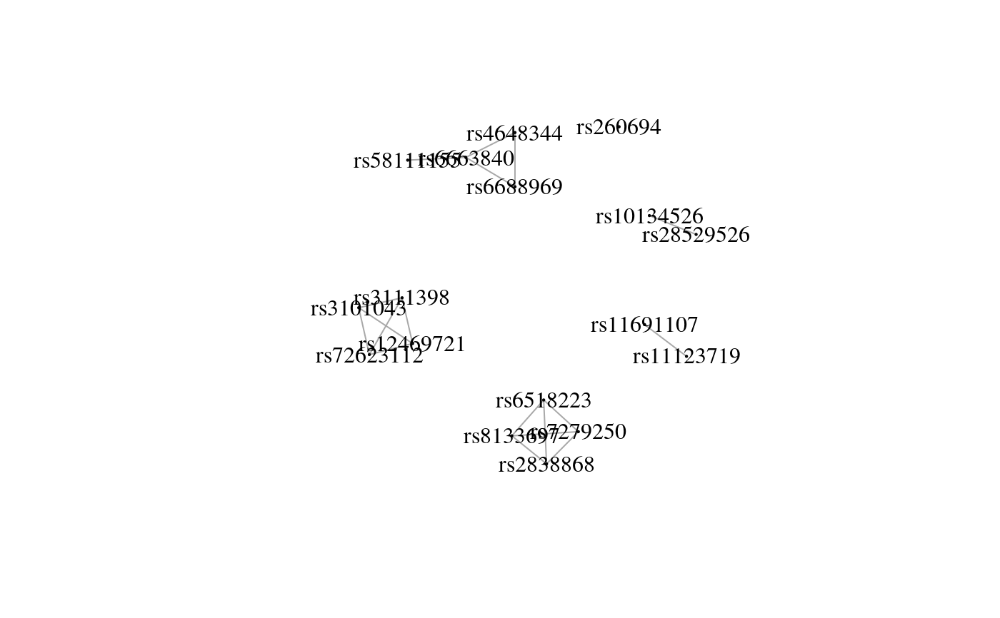
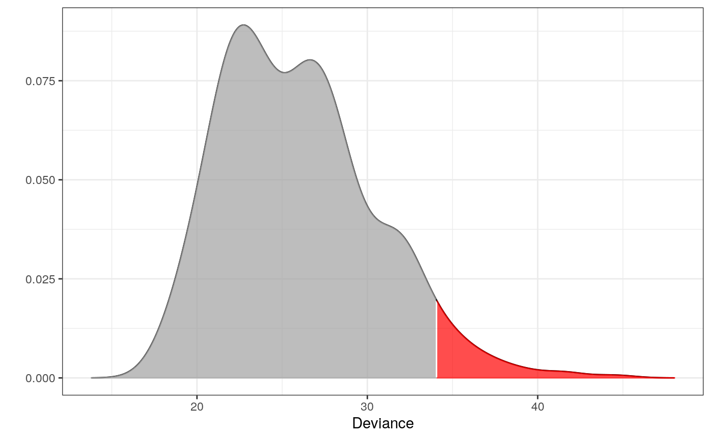
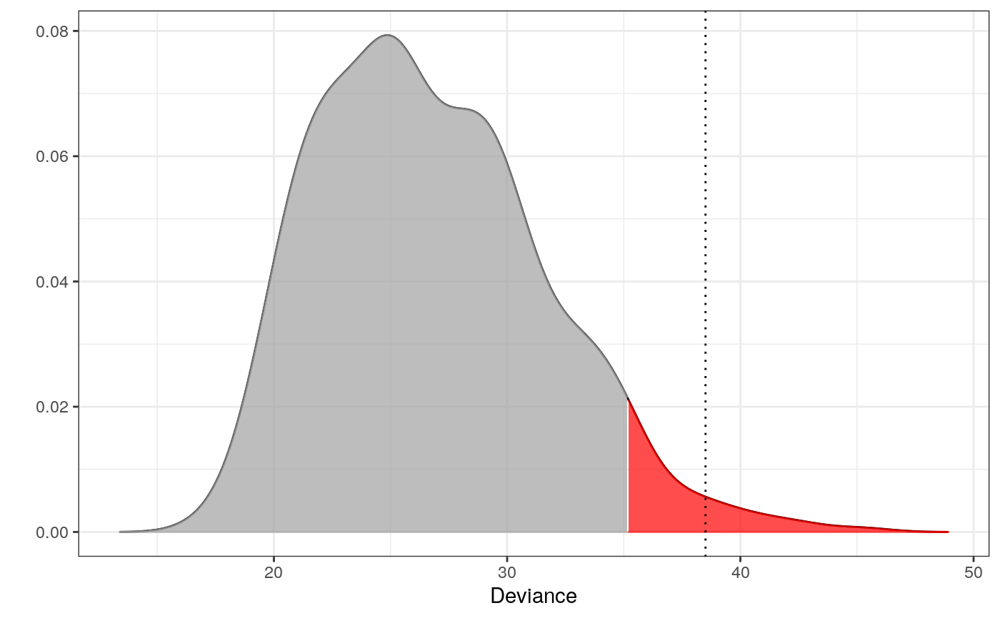

A function for outlier detection with mixed, but independen, information
fit_mixed_outlier(m1, m2)
| m1 | An object returned from |
|---|---|
| m2 | An object returned from |
An object of type mixed_outlier with novelty or outlier
as child classes. These are used for different purposes. See fit_outlier.
It is assumed that the input data to m1 and m2
holds information about the same observation in corresponding rows.
Thus, the two datasets must also be of same dimension.
library(dplyr)#> #>#> #> #>#> #> #>#> #> #>set.seed(7) # for reproducibility ## Data # The components - here microhaplotypes haps <- tgp_haps[1:5] # only a subset of data is used to exemplify dat <- tgp_dat %>% select(pop_meta, sample_name, all_of(unname(unlist(haps)))) # All the Europeans eur <- dat %>% as_tibble() %>% filter(pop_meta == "EUR") # Extracting the two databases for each copy of the chromosomes eur_a <- eur %>% filter(grepl("a$", sample_name)) %>% select(-c(1:2)) eur_b <- eur %>% filter(grepl("b$", sample_name)) %>% select(-c(1:2)) # Fitting the interaction graphs on the EUR data ga <- fit_components(eur_a, comp = haps, trace = FALSE) gb <- fit_components(eur_b, comp = haps, trace = FALSE) print(ga)#> A Decomposable Graph With #> ------------------------- #> Nodes: 17 #> Edges: 18 / 136 #> Cliques: 7 #> - max: 4 #> - min: 1 #> - avg: 2.57 #> <gengraph, list> #> -------------------------## --------------------------------------------------------- ## EXAMPLE 1 ## Testing which observations within data are outliers ## --------------------------------------------------------- # Only 500 simulations is used here to exeplify # The default number of simulations is 10,000 m1 <- fit_outlier(eur_a, ga, nsim = 500) # consider using more cores (ncores argument) m2 <- fit_outlier(eur_b, gb, nsim = 500) # consider using more cores (ncores argument) m <- fit_mixed_outlier(m1, m2) print(m)#> #> -------------------------------- #> Simulations: 500 #> Variables: 17 #> Observations: 503 #> Estimated mean: 25.95 #> Estimated variance: 20.47 #> -------------------------------- #> Critical value: 34.03098 #> Alpha: 0.05 #> <mixed_outlier, outlier, outlier_model, list> #> --------------------------------plot(m)outs <- outliers(m) eur_a_outs <- eur_a[which(outs), ] eur_b_outs <- eur_b[which(outs), ] # Retrieving the test statistic for individual observations x1 <- rbind(eur_a_outs[1, ], eur_b_outs[1, ]) x2 <- rbind(eur_a[1, ], eur_b[1, ]) dev1 <- deviance(m, x1) # falls within the critical region in the plot (the red area) dev2 <- deviance(m, x2) # falls within the acceptable region in the plot dev1#> [1] 39.01466dev2#> [1] 27.03032#> [1] 0.008#> [1] 0.372# \donttest{ ## --------------------------------------------------------- ## EXAMPLE 2 ## Testing if a new observation is an outlier ## --------------------------------------------------------- # Testing if an American is an outlier in Europe amr <- dat %>% as_tibble() %>% filter(pop_meta == "AMR") z1 <- amr %>% filter(grepl("a$", sample_name)) %>% select(unname(unlist(haps))) %>% slice(1) %>% unlist() z2 <- amr %>% filter(grepl("b$", sample_name)) %>% select(unname(unlist(haps))) %>% slice(1) %>% unlist() # Only 500 simulations is used here to exemplify # The default number of simulations is 10,000 m3 <- fit_outlier(eur_a, ga, z1, nsim = 500) # consider using more cores (ncores argument) m4 <- fit_outlier(eur_b, gb, z2, nsim = 500) # consider using more cores (ncores argument) m5 <- fit_mixed_outlier(m3, m4) print(m5)#> #> -------------------------------- #> Simulations: 500 #> Variables: 17 #> Observations: 504 #> Estimated mean: 26.74 #> Estimated variance: 22.3 #> -------------------------------- #> Critical value: 35.1841 #> Deviance: 38.50607 #> P-value: 0.016 #> Alpha: 0.05 #> <mixed_outlier, novelty, outlier_model, list> #> --------------------------------plot(m5)# }